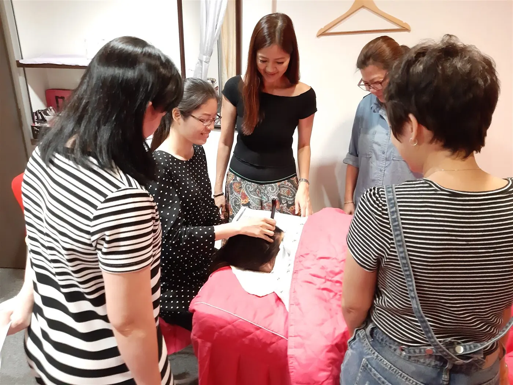
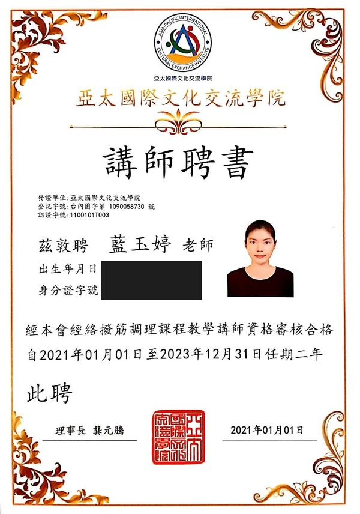
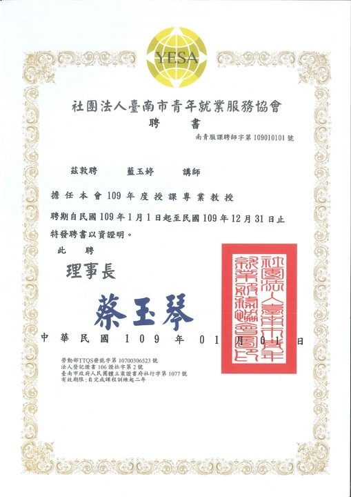
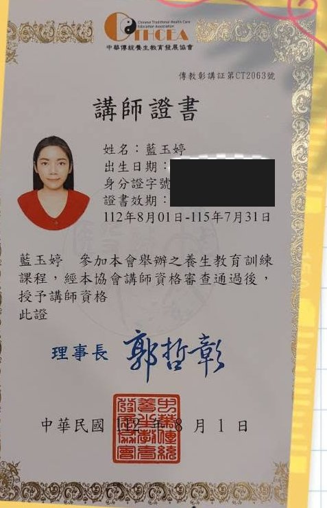
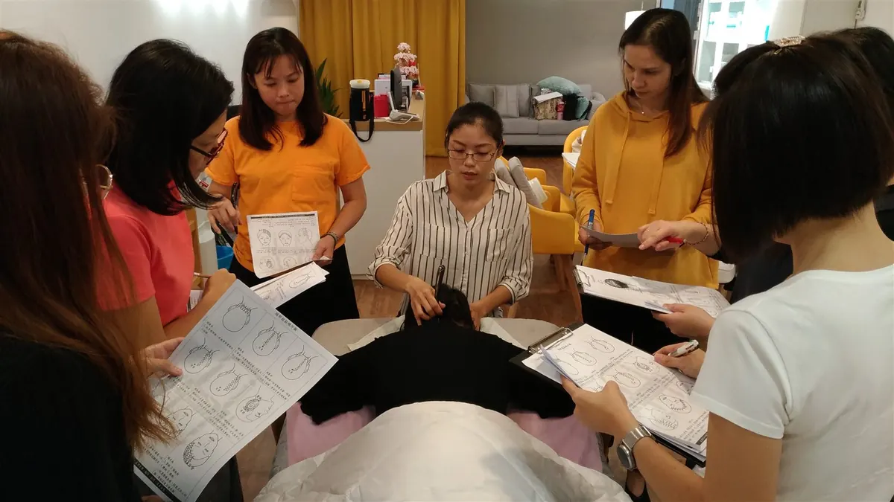
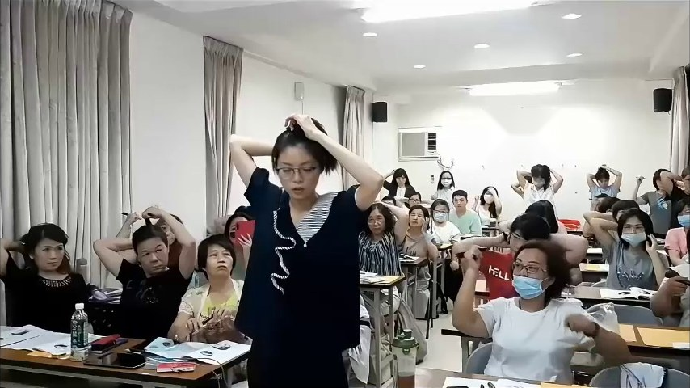

Sobre la profesora
Hola, soy Yu-Ting Lan.
Fundadora de Héhé Studio e instructora internacional de bojin: alguien que aprendió este método a través de un camino práctico y exigente, para que tú puedas aprenderlo de forma suave, metódica y estructurada.
Yu-Ting Lan (藍玉婷), desde Taiwán · fundadora de Héhé Studio (和合雅築).
En resumen
Una graduada en administración que descubrió su vocación.
Nunca imaginé dedicarme al cuidado del rostro. Me gradué en administración, sin antecedentes en estética, y comencé únicamente con curiosidad y una camilla plegable en el maletero de mi automóvil.
A lo largo de los últimos años he formado a más de mil alumnas y alumnos, incluyendo principiantes absolutas, madres y hombres, en Taiwán, Hong Kong y Malasia. En 2020 nuestro estudio fue distinguido en las 100 Mejores Historias de Marca de Taiwán, y he sido certificada como instructora por tres asociaciones profesionales.
Sin embargo, de lo que más me enorgullezco no es de las cifras. Es de haber transformado un aprendizaje autodidacta y complejo en un método claro, sereno y estructurado, para que tú no tengas que atravesar las mismas dificultades que yo viví en los comienzos.
Hitos en el camino
1.000+
alumnas formadas, desde principiantes hasta abuelas
3
países donde he enseñado: Taiwán, Hong Kong y Malasia
2020
distinguida en las “Top 100 Historias de Marca” de Taiwán
Fundadora de Héhé Studio (和合雅築) · certificada como instructora de bojin por tres asociaciones profesionales.

Instructora de cursos de BojinInstituto de Intercambio Cultural Asia-Pacífico · 2021–2023
Instructora designadaAsociación de Empleo Juvenil de Tainan · 2020
Instructora certificadaAsoc. China de Cuidado Tradicional de la Salud · 2023–2026Los certificados originales están emitidos en caracteres tradicionales. Pulsa en cualquiera para ampliarlo.
Mi trayectoria
Cómo nació The Bojin Method.
Una encrucijada
Al terminar la universidad, tenía un título y muy poco más. Como tantas personas, entré a trabajar como asistente en una empresa tradicional y me preguntaba en silencio: ¿es esta la vida que realmente deseo construir? Empecé a notar las limitaciones de lo aprendido en las aulas frente a todo lo que el mundo real exige. Aquellos años difíciles resultaron ser un valioso regalo: me impulsaron a reflexionar con honestidad sobre lo que de verdad quería crear.
La chispa inicial
El punto de inflexión fue un recuerdo de infancia. Mi padre pasaba jornadas enteras concentrado en el trabajo y volvía a casa fatigado y adolorido. De niña, lo único que podía hacer por él era frotarle la espalda y los hombros hasta aliviarle la carga, y aún recuerdo cómo se relajaba su expresión después. Años más tarde ese recuerdo me devolvió una pregunta sencilla: ¿por qué no dedicarme a algo que me sustente y ayude al mismo tiempo a los demás?
No tenía experiencia previa ni contactos, solo un compromiso sincero. Así comencé a formarme de la manera en que desearía que se enseñara: de forma activa y rigurosa, hasta dar con la práctica que lo cambió todo: el bojin facial.

Aprender por el camino exigente
En sus inicios, aprender fue un proceso complejo. Para comprender una misma técnica tuve que formarme con tres maestras distintas; casi nadie la había sintetizado en un método estructurado. Así que en cuanto dominé el contacto, me entregué de lleno a la práctica: ofrecía servicios a domicilio, cruzando la ciudad con una camilla plegable en el coche y almorzando al volante entre sesión y sesión.
En tres meses trabajé sobre casi 120 rostros, unas cuatro personas al día, dos horas por sesión, seis en los días más intensos. Aquella etapa me grabó una lección que nunca olvido: transformar una idea en realidad requiere pasos pequeños, ajustes constantes y mucha repetición. Lo que nos frena rara vez es equivocarnos; es no atreverse a empezar.
De mis manos a un método accesible
Con el tiempo, las personas que acudían empezaron a pedirme lo mismo: ¿podrías enseñarme a hacer esto para mi propio rostro y para mi familia? Organicé pequeños talleres en Kaohsiung y Tainan, la acogida fue muy cálida y encontré por fin el ritmo de enseñanza ideal. Así fundé Héhé Studio. Desde 2015 formé a más de un millar de alumnas y en 2019 impartí clases en Malasia y Hong Kong.

A principios de 2020, las restricciones sanitarias cerraron las clases presenciales. En lugar de quedarme esperando, me planteé un reto: ¿podría recrear esta enseñanza en línea, de lo simple a lo profundo, en la secuencia exacta y con un acompañamiento minucioso? De esa convicción surgió The Bojin Method: la misma enseñanza cercana y paciente, trasladada con fidelidad de mis manos a las tuyas.
Antes de cualquier cosa, clarifica tu motivación y avanza en el orden debido; entonces muy pocas metas estarán fuera de tu alcance. — el consejo de mi propia maestra que marcó mi camino
Creo firmemente que el valor genuino es lo que construye confianza duradera, y que solo la técnica probada merece ser aprendida. Para aprender bojin se necesita un sistema amable y progresivo, guiado por tu propia motivación y una estructura clara de pasos. Esa filosofía es la razón misma de ser de este método.
Filosofía de Enseñanza
Tres principios detrás de cada lección
01
El método antes que la herramienta
Una herramienta específica nunca sustituye a una buena técnica. La secuencia, el ángulo de apoyo y la presión confortable realizan el 90% del trabajo. Puedes comenzar a aprender solo con tus dedos.
02
Confort antes que fuerza
El dolor y los hematomas nunca son un objetivo en el bojin auténtico. La piel del rostro es delicada: un contacto respetuoso y amable alivia la tensión fascial con mayor profundidad y seguridad que un raspado agresivo.
03
Cadena fascial interconectada
El rostro no funciona aislado. La rigidez en el cuello, la mandíbula y el cuero cabelludo incide de forma directa sobre la expresión facial. Todo alivio duradero comienza cuidando la estructura de soporte.
Preguntas habituales
Sobre la instructora y el método
¿Cómo se compara el Bojin con el masaje facial occidental?
Mientras que el drenaje linfático occidental se concentra en pases superficiales muy ligeros, y el gua sha realiza deslizamientos amplios sobre superficies planas, el Bojin se enfoca en las vías fasciales y los puntos de inserción muscular. Emplea una mecánica precisa de punto y deslizamiento suave para desanudar tensiones acumuladas entre las fibras musculares.
¿Realmente se puede aprender esta técnica en línea?
Sí. Ese fue el principal reto que me propuse resolver en 2020. Al grabar primeros planos en macro desde diversos ángulos, mostrando con nitidez la colocación de los dedos, la inclinación de la herramienta y las sensaciones clave de apoyo, cualquier persona puede reproducir la experiencia del estudio en casa.
¿Es este método un tratamiento médico o estética clínica?
Es bienestar personal y autocuidado suave guiado por un método metódico. No es tratamiento médico, diagnóstico de salud ni fisioterapia clínica. Ante cualquier condición cutánea o muscular particular, consulta siempre a tu médico.
Comienza hoy
Dedica a tu rostro diez minutos de calma.
Comienza con el video gratuito de 3 minutos —la primera lección condensada del método— o realiza el cuestionario para descubrir la rutina ideal para tu rostro.
Ver el video gratuito de 3 min → Hacer el cuestionario de 1 min